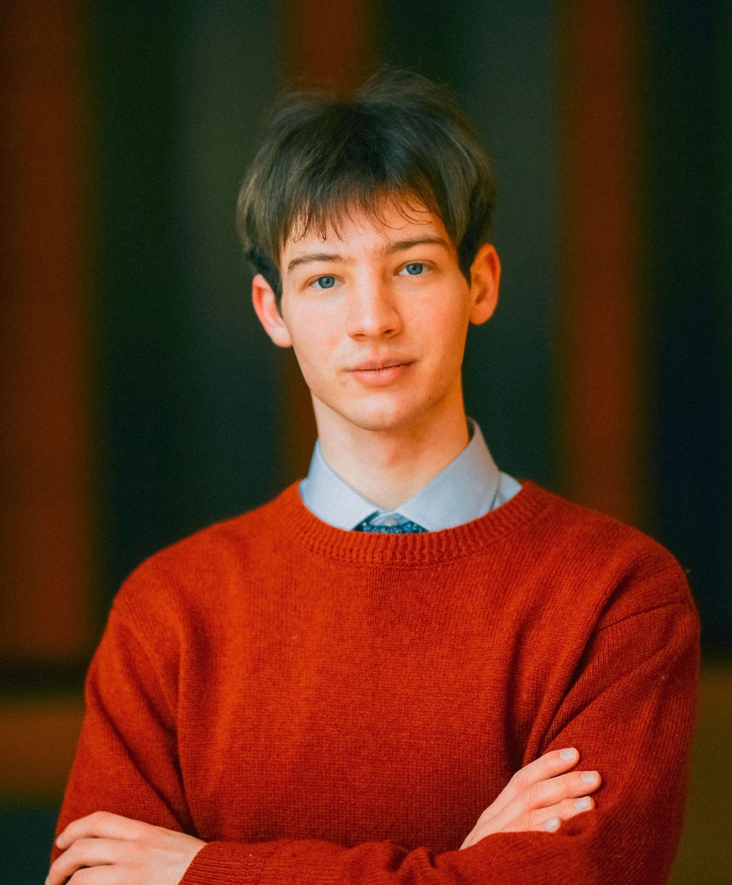

Computer Science & Math/Physics (minor) · University of Michigan
schwendp@umich.edu · LinkedIn ·
CV · GitHub · Google Scholar

Broadly, my interests lie in reinforcement learning, neuroscience, and language agents. I love investigating how intelligent behavior emerges from learning, curiosity, and interaction—especially in settings with limited or synthetic experience.
I am currently an undergraduate researcher in Michigan Medicine under Professor Yuanfang Guan. Much of my recent work focuses on learning how individual neurons encode visual information, recovering stimuli from neural activity, and using generative modeling to explore the distribution of biological representations.
Last summer, I was a research scientist intern at Sakana AI, where I worked with the amazing Dr. Yujin Tang on reinforcement learning and evolutionary approaches for structured collaboration among LLM agents.
Before any of this AI/ML stuff, I was a rookie in Prof. Sharon Glotzer's lab at the University of Michigan Department of Chemical Engineering, where I worked on GPU-accelerated molecular dynamics simulations. In high school, I was also a part-time software developer at Deque Systems.
Learning to Orchestrate Agents in Natural Language with the Conductor.
S. Nielsen*, E. Cetin*, P. Schwendeman*, Q. Sun, J. Xu, Y. Tang. (2025). ICLR 2026. arXiv.
TRINITY: An Evolved LLM Coordinator.
J. Xu*, Q. Sun*, P. Schwendeman, S. Nielsen, E. Cetin, Y. Tang. (2025). ICLR 2026. arXiv.
Learnable Diffusion Framework for Mouse V1 Neural Decoding
K. Deng*, P. S. Schwendeman*, Y. Guan. Advanced Science. doi.
Effect of PLGA raw materials on in vivo and in vivo performance of drug-loaded microspheres.
D. Liang, J. Walker, P. S. Schwendeman, et al. Drug Delivery and Translational Research (2024).
doi
Predicting Single Neuron Responses of the Primary Visual Cortex with Deep Learning Model.
K. Deng, P. S. Schwendeman, Y. Guan. Advanced Science (2024).
doi
Unified memory in HOOMD-blue improves node-level strong scaling.
J. Glaser, P. S. Schwendeman, et al. Computational Materials Science (2020).
doi
Learning from Information Gain with Counterfactual Policy Updates To learn without explicit rewards, we want to try to use information gain. One way to do this is through an online bootstrapping framework that generates counterfactual policy improvements from model rollouts and information gain (prompt -> response -> new information -> updated response). Training Qwen2.5 to prefer the updated policy rollouts using DPO achieves performance comparable to GRPO on DeepMath without rewards (experiments done with TRL). This has been rendered somewhat obselete in relation to methods like SDPO.
At Michigan, I TA for EECS 445 (Introduction to Machine Learning)! (W25, F25, W26)
Poker AI — Deep RL agent approaching SOTA exploitability. [code]
Uncovering Spacetime Metrics from Sparse Observations — Training neural networks to reconstruct spacetime metrics by using general relativistic constraints. [writeup draft soon]
SugarSense — State space model for forecasting blood glucose 2 hours ahead (0.95 corr). [code]
Last updated: 2026